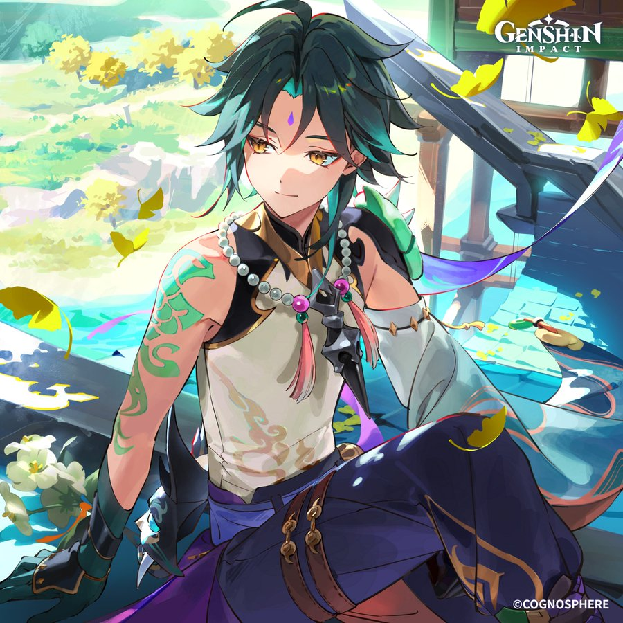
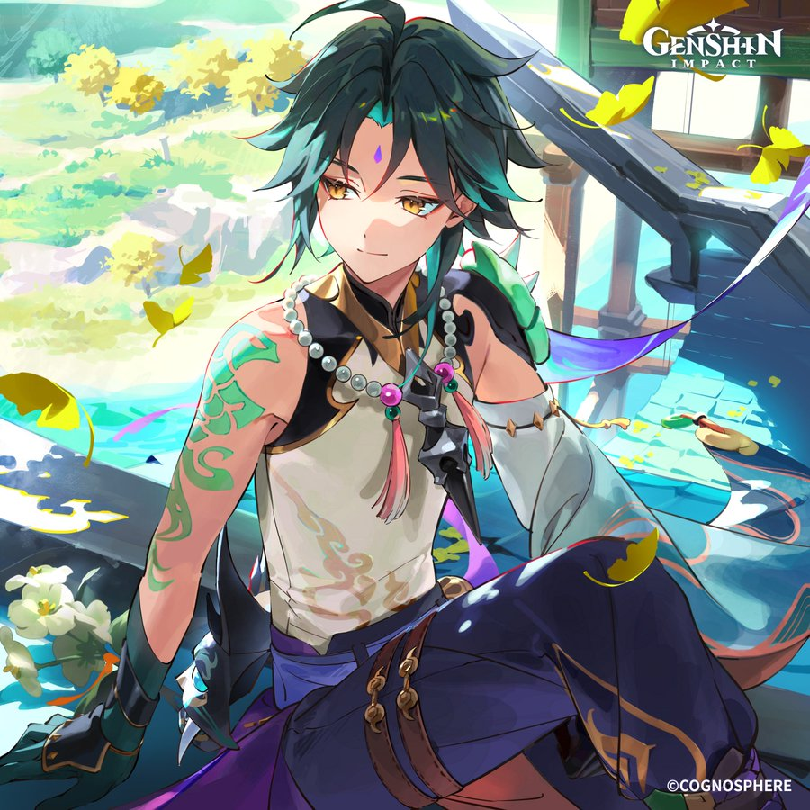

TP2-Automne 2024
Bienvenue dans notre communauté!
Auteure: Prinnie Ly
Techniques d'intégration multimédia
Collège de Maisonneuve
Rejoignez notre fanclub de Xiao
Optimisation de Xiao
| Classement | Arme | Artéfact | Composition d'équipe |
|---|---|---|---|
| 1 | Primordial Jade Winged-Spear | Vermillion Hereafter x4 | Xiao + Xianyun + Faruzan + Furina |
| 2 | Staff of Homa | Marechaussee Hunter x4 | Xiao + Faruzan + Bennett + Zhongli |
| 3 | Calamity Queller | Viridescent Venerer x2 Gladiator Gladiator's Finale x2 | Xiao + Faruzan + Bennett + Furina |
| 4 | Deathmatch | Viridescent Venerer x4 | Xiao + Xianyun + Bennett + Furina |
| 5 | Lithic Spear | Gladiator Gladiator's Finale x4 | Xiao + Jean + Bennett + Zhongli |
Apprends un peu plus sur Xiao!
Son histoire tragique
Xiao est une adepte âgé de plus de 2000 ans. Autrefois, nommé Alatus, prisonnier de guerre, il était controlé par son ancien maître, qui lui forçait à tuer de nombreuses personnes, salissant ainsi ses mains. Celui-ci a souffert pendant de nombreux millénaires avant d'être sauvé par Morax, souverain et dieu de l'élément Géo. Xiao, le nom donné par Morax, décida de consacrer sa vie à servir Morax, car c'est lui qui l'a sauvé de sa souffrance sans fin. Xiao est le dernier survivant des cinq principaux Yakshas qui protégeaient la nation de Morax en tuant les monstres démoniaques qui tentaient de détruire la paix de Liyue. Il se retrouve souvent seul, souffrant de la magie démoniaque des monstres.
Raisons pour lesquelles j'aime ce personnage
J'aime le personnage Xiao parce que, malgré son passé tragique et après avoir perdu ses quatre compagnons les plus proches pendant la guerre des Archontes, il essaie de faire de son mieux pour réapprendre comment vivre, et non simplement exister comme il le faisait dans le passé. Malgé son caractère réservé et toute la douleur et souffrance qu'il porte, il est quelqu'un de doux et bienveillant qui ne veut pas faire de mal aux gens autour de lui. De plus, il a un très beau design, avec ses yeux dorés qui contrastent le sarcelle et le mauve de sa tenue.
Galerie
 

Créations collectives des fans
Dans notre communauté, nous avons de nombreux fans qui créent des édits, des fanarts, etc. Viens nous rejoindre ou viens t'en nourrir!